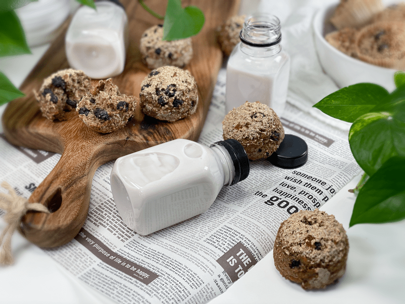
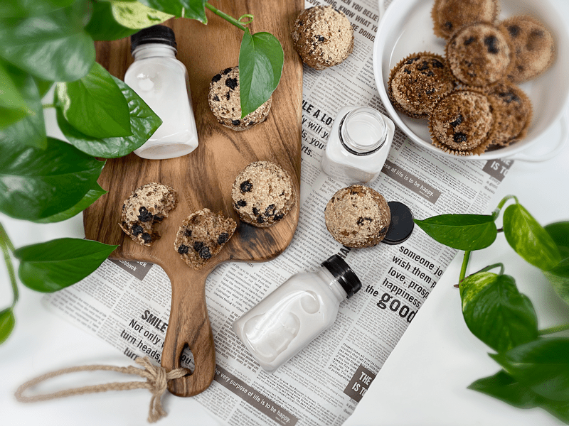
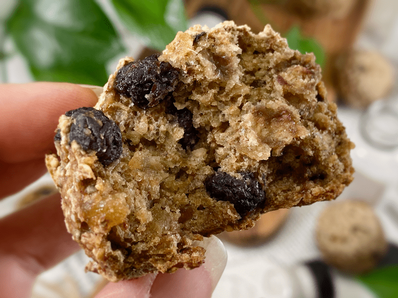

Blueberry Ginger Stud Muffins | Cooked | GF | Oil-Free | Flour-Free | Nut-Free
These muffins have a bread-like texture, filled with delicious pockets of organic blueberries and crystallized ginger. This recipe is not only easy, but light, delicately sweetened, has a crispy top, and is absolutely delicious. For quite some time now, Bob and I have been training our tastebuds to appreciate sweet treats that are not so heavy in sugary-sweetness. Did you know that overconsumption of sugar can change your taste buds? Of course, there is a whole host of issues that sugar can cause to wreak havoc on your body, but over time, your tongue alone can and will develop a tolerance to sugar, and you will need more to satisfy your cravings. It’s a vicious cycle.

I have been diligent in breaking that cycle and I am happy to report that it is working. The fun part is that I am doing this without Bob’s awareness. Don’t get me wrong, he has the propensity to eat healthfully, which I am so grateful for… but I take every opportunity I can to help increase his nutrient upload and decrease that in which hinders us, without any effort on his behalf.
I called these muffins… stud muffins because after they were done cooking, they looked like little stud earrings. Poor descriptor, but that’s where my mind went, and hey, welcome to my world. While baking, they do rise some, but they don’t overflow. No muffin tops here!
Ingredient Run-Down
Some of this information below may seem redundant if you are used to my recipes, but I feel it is important to thoroughly educate just in case this is the only recipe of mine you may come across.
Organic Blueberries
- I am a big proponent of buying organic food when at all possible, especially berries, since they are on the Dirty Dozen list when it comes to chemicals. Dried organic blueberries can be expensive, but I found a pretty darn good deal at Costco where they are $14.99 for a 20-ounce bag.
- If you can’t get your hands on organic dried blueberries, you can use fresh, but this will shorten their lifespan since fresh berries have a lot of moisture. Fresh will also change the texture of the muffins. Bob prefers dried blueberries due to their chewy texture.
- Organic frozen blueberries will work as well.
Crystallized Ginger
- This is a store-bought version of dried ginger. It does come with a slight sugar coating, which enhances the ginger. Raw, pure ginger is unappealing to some people. Only you know your palate.
- Depending on the brand you use, you may need to dice into smaller pieces.

Buckwheat
- Do not replace the whole buckwheat with buckwheat flour. The bread will become far too dense.
- When you go to the market you will find “raw” buckwheat (uncooked, pale tan color), kasha (cooked buckwheat, brown in color), whole groats, and broken groats. For this recipe, I am using raw WHOLE buckwheat groats.
- The buckwheat needs to be soaked for at least 30 minutes but can be soaked up to 4 hours if you have a timing issue. Not only does the soaking process reduce the uptake of phytic acid, but it also softens and causes the buckwheat to swell, giving the batter exactly what we need for the expected outcome.
- The nutritional benefits of buckwheat are plentiful! It is high in magnesium, Vitamin B6, fiber, potassium, and iron. It is also a good source of copper, zinc, and manganese. It also has a low glycemic index, avoiding a spike in blood sugar.
- I don’t know about you, but I love learning where and how my food grows. If this is you, click (here) to learn more.
Gluten-Free Rolled Oats
- Just like the buckwheat, you will be using oats in their whole form, rather than oat flour.
- Use organic oats. Here is a great article that was written by our doctor’s office.
- I tried soaking the oats along with the buckwheat, but it resulted in a REALLY dense bread. If you wish to soak the oats to reduce the phytic acids and enzyme inhibitors, I recommend soaking them and dehydrating them before adding them to this recipe.
Chia Seeds
- Chia seeds are added as the primary binder in this bread. They are used in place of eggs.
- Typically when flax or chia seeds are used as egg replacers, they are mixed with a little water before adding to the batter. For this bread recipe, it isn’t necessary because the chia seeds will activate once blended with all the other ingredients (including the water).
- Chia seeds don’t need to be ground to a powder (unlike flax seeds).
Psyllium Husks
- Psyllium husks are added to give the bread the spongy texture that most of us are used to when it comes to commercially made bread. It’s one of the greatest characteristics of bread!
- Psyllium comes in powder or husk form. You will want to make sure you use what the recipe recommends.
- Psyllium powder equals one-third the whole husks. So for instance, 1/3 cup psyllium powder = 1 cup psyllium husks. So as you can see, the volume is quite different based on the form of psyllium that you use. They are not interchangeable. For this recipe, I used the husks.
- Psyllium seed husks are one of nature’s most absorbent fibers– they can absorb over ten times their weight in water.
- As psyllium thickens when liquid is added, it is known to help get things moving in the digestion area. So, If you are eating recipes that contain these husks, please be sure to increase your water intake.
- For a bit more information about psyllium husks, click (here).
Baking Soda and Powder
- Be sure to use a reputable brand such as Bob’s Red Mill or Frontier. Arm & Hammer (and other similar brands) use a chemical process that turns trona ore into soda ash and then reacts carbon dioxide with the soda ash to produce baking soda. Bob’s Red Mill and Frontier procure their sodium bicarbonate directly from the ground, in its natural state.
- Look for a brand that is aluminum-free.

Tips and Tricks
Baking Pan
- When it comes to gluten-free baking, I tend to find better results when using silicone baking pans, such as with my Buckwheat and Oat Bread. However, for this recipe, I found that both the silicone and metal baking pan work equally well. The only difference is that you will want to use cupcake liners in the metal pan to prevent sticking. I did a side by side test to see if Bob could tell the difference, and he was pleased with the outcome on both.
Texture
- If you want a more cake-like muffin, use fresh organic blueberries.
- If you want a more bread-like muffin, use dried organic blueberries.
It appears that I had a lot to say to about these stud muffins. I hope you learned something! Try the recipe, and most of all, enjoy it. Sending love and blessings, amie sue
 Ingredients
Ingredients
Yields 15 (1/4 cup measurement) muffins
- 1 cup raw whole buckwheat kernels
- 1 1/2 cups gluten-free rolled oats
- 1/4 cup chia seeds
- 1/4 cup psyllium husks (not powder)
- 1/4 cup unsweetened applesauce
- 1 1/2 cups water (retained after soaking the dried fruit)
- 1 cup dried blueberries
- 1/3 cup dried crystallized ginger chips
- 1/2-1 tsp liquid stevia
- 1 tsp sea salt
- 1 tsp aluminum-free baking powder
- 1/2 tsp baking soda
Preparation
Soaking the Buckwheat
- Place the buckwheat in a glass or stainless steel bowl, and cover with double the amount of water.
- Add 2 Tbsp raw apple cider vinegar, stir, and cover with a clean dishtowel.
- Let it sit on the counter for 30 minutes to 4 hours.
- Once ready to use, drain and rinse before adding to the food processor.
Mixing and Baking
- Preheat oven to 350 degrees (F) and prepare your baking pan.
- I am baking the muffins in silicone pans; therefore I don’t need any oil or parchment paper to line the pan. One tip when using silicone pans is to place them on a baking sheet before loading and transporting them to the oven. Since they are soft and flexible, they can be challenging to handle once full.
- If you use any other type of pan, I recommend using cupcake liners so the muffins don’t stick.
- Measure out the 1 1/2 cups of water and add the dried fruit so it can reconstitute and soften. Set aside while you pull together the remaining ingredients.
- The dried fruit also infuses the water, which will disperse throughout the rest of the ingredients when blended.
- Add the rolled oats, chia seeds, psyllium husks (not powder), applesauce, stevia, and salt to the food processor (along with the buckwheat). Now pour in the water from the dried fruit (don’t add the fruit yet) and process for a full 30-60 seconds.
- Add the dried fruit, baking powder, and baking soda, process 10 seconds, and immediately pour the batter into the muffin pan and bake for roughly 45 minutes.
- The baking time may differ depending on your oven (all ovens seem to differ a bit) and depending on the size of muffins you make.
- To test for doneness, poke a toothpick in the center of the muffin. When the muffin is done cooking, the toothpick with come out clean.
- Once done baking, place the muffins onto a cooling rack. Do not keep them in the pan, or they can become soggy.
- Cut once cooled, and enjoy!
Storage
- Once cooled, you can store in an airtight container on the counter for a couple of days, or in the fridge for around 5 days. I am sure they would last longer, but every time I set aside a “test subject” Bob ends up finding and eating it.
- To freeze, wrap individually in freezer wrap, and place in freezer bags or containers. Wrapping individually will prevent ice crystals from forming. Label all packages with the name of the recipe and the date. Eat within 3 months for optimal freshness and flavor.
© AmieSue.com